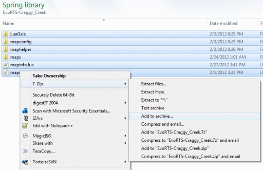

Mapdev:Tutorial Finalizing
Finalizing
This page describes how to compile some of the texture files into the smf smt files, test your map, archive the map using 7zip and upload to springfiles.com
Review
Following stage one of the beginners tutorial you will have some intermediary files ready to convert into the SMF and SMT map format:
- heightmap.png
- metalmap.png
- diffuse.png
- mini.bmp
- grassmap.png
There is also the terrain type map but thats not covered in these tutorials
Compiling the smf and smt files
| springMapConvNG (Windows/Linux) |
|
|---|---|
| smf_tools (Windows/Linux) |
|
| MapConv (Windows) |
|
| Mac | FIXME: |
Testing the map
Copying the sdd directory to your spring maps folder will allow spring to recognise it as a map, this way you can tweak parameters and test things before archiving it for distribution.
Archiving
Archiving the map creates a single file with smaller overall size for easy distribution.
- Create a new 7zip archive containing the contents of the sdd folder.(see below for platform specific instructions)
- Copy the archive to maps folder to test
| Caution | |
|---|---|
| Make sure that you have not created the archive with the "solid archive" option, or spring will not recognise it. |
| Linux |
|
|---|---|
| Windows |  |
| Mac | FIXME: |
{kind=link}
Uploading to springfiles.com
- Head on over to springfiles.com and create an account
- Select upload from the main horizontal menu
- Fill out as much as you can
- Post to map creation subforum with something like "[new map]" in the subject line so as to increase visibiity.
Congratulations
Your map is set free into the wilds of the internet. We sincerely hope its well loved.
Please browse the Map Development wiki pages for more ways to make awesome maps. Please help us make this wiki as comprehensive as possible, if you see something missing don't hesitate to jump in and add it.
Additionally, now you have gotten into maps, perhaps other areas of spring development may interest you. Check out the Game development pages.
For help and discussions please visit the forums
Good Luck.